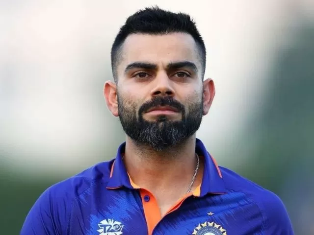
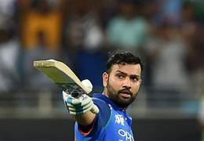
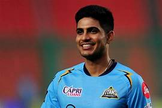
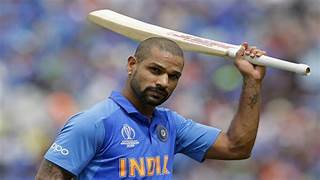

1.Virat Kohli Biography:
`

Birth, Age, Family and Education
Virat Kohli was born on 5 November 1988 to Prem Kohli and Saroj Kohli in Delhi, India. His father was a criminal lawyer while his mother is a housewife. He was bred in Delhi's Uttam Nagar and attended Vishal Bharti Public School and Saviour Convent. Kohli's father was bed-ridden for a month and succumbed to cardiac arrest on 18 December 2006.
Virat Kohli Cricket Career
When West Delhi Cricket Academy was created in 1998, Kohli was part of its first batch and received training under Rajkumar Sharma.
Kohli made his cricket debut in October 2002 with the Delhi Under-15 team in the 2002-03 Polly Umrigar Trophy and lead the team for the next trophy. He was later selected in the Delhi Under-17 team for the 2003-04 Vijay Merchant Trophy where he finished as the highest run-scorer.
At the age of 18, Kohli made his first-class debut for Delhi against Tamil Nadu wherein he scored 10 runs. In July 2006, he made his debut in the Under-19 team during India's tour of England. India won both ODI and Test series. Kohli made his T20 debut next year and emerged as the highest run-scorer in the Inter-State T20 Championship with 179 runs.
The year 2008 was a life-changing year for Kohli. First, he captained the Under-19 Cricket World Cup-winning team. Second, he was bought by RCB for $30,000 on a youth contract for IPL. Third, he made his international debut.
After recovering from a minor injury, Kohli replaced Gambhir for the tri-series in Sri Lanka and batter at no. 4 in the 2009 ICC Champions Trophy as Yuvraj Singh was recovering from an injury.
For the tri-nation ODI tournament in Bangladesh in 2010, Tendulkar was rested, thereby enabling Kohli to play in each match. Due to his phenomenal performance in Bangladesh, he was praised by the then captain MS Dhoni.
Kohli was part of the World Cup-winning team in 2011 and became the first Indian batsman to score a century on World Cup debut.
Kohli made his Test debut against West Indies at Kingston and performed poorly in the series, amassing just 76 runs in five innings. In 2015, he became the first Indian batsman to score a century against Pakistan in a World Cup match.
During South Africa's tour of India, he became the fastest batsman in the world to make 1,000 runs in T20I cricket, achieving the feat in his 27th innings.
During the ODI tour of Australia, Kohli emerged as the fastest batsman in the world to cross the 7000-run mark in ODIs, and the fastest to score 25 centuries.
During the 3 match Test series against Sri Lanka at home in 2017, he became the first batsman to score six double hundreds as a captain. That year, he scored a total of 2818 international runs, the third-highest by an Indian in a calendar year and highest ever by an Indian player.
In August 2018, he ranked no. 1 in the ICC Test rankings. With this, he became the seventh Indian batter to achieve this milestone. He became the first Indian, first captain and tenth overall to hit three successive centuries in ODIs in October 2018.
Captaincy
2.Rohit Sharma Biography

Rohit Sharma is undoubtedly the cleanest hitter of a cricket ball you will ever see. Nothing can be as pleasing as the sight of the ‘Hitman’ striking the ball over the covers. Rohit Sharma is the current vice-captain of the Indian Cricket Team in the limited-overs.
Once hailed as a ‘talented’ youngster to later ridiculed by the critics for his inconsistency and now becoming an important cog in the Indian batting line up, this Mumbaikar’s journey is nothing short of a movie right there in the making
Rohit is also the captain of the IPL team Mumbai Indians. Sharma currently holds the record for the highest individual score in One Day Internationals. He scored a record 264 off 173 balls against Srilanka on November 13, 2014. Rohit is also the only player to score
two double centuries in One Day Internationals. He is also the only person to score 250+ in ODI innings.
Rohit Sharma’s Family
Rohit Sharma Wife
Rohit Sharma is married to Ritika Sajdeh. She was born on 21 December 1987 to Bobby Sajdeh and Tina Sajdeh.
Her brother Kunal Sajdeh works as a manager at IMG Reliance.
After completing her education, Ritika joined her cousin’s company- Cornerstone Sport and Entertainment as a sports manager.
Ritika met Rohit Sharma at a Reebok shoot in 2008. Her ‘Rakhi Brother’ Yuvraj Singh, had introduced them to each other.
Sharma and Ritika started to date in 2009 after being friends for a while.
Rohit was born on April 30, 1987, in Maharashtra.
He was born to Gurunath Sharma and Purnima Sharma.
He speaks fluent Telegu.
Rohit’s father was a caretaker of a transport firm storehouse.
Rohit Sharma’s mother belongs to Visakhapatnam.
He used to live with his grandparents and uncles in Borivali (Mumbai).
3.Shubman Gill Early Life

While he was anonymously working out at the small academy opposite Mohali’s PCA Stadium, former Indian pacer Karsan Ghavri held a bowling camp for talented seamers where he needed kids to bat against his bowlers. And incidentally, that’s when young Shubman came into the picture.
Gill’s father said that Shubman was passionate about cricket since the age of three. “He only played cricket since he was three-years-old. Kids of that age would play with toys. He never asked for such things. It was only bat and ball for him. He used to sleep with a bat and ball”, Gill’s father, Lakhwinder Singh said.
According to Lakhwinder Singh, he left farming in his village and moved to Mohali to make his boy a professional cricketer.
Lakhwinder was convinced of his talent and moved the family to Mohali and rented a house near the PCA Stadium.
For some years Gill took coaching from his school, after that his father admitted him in Punjab cricket association’s academy.
On his Under-16 state debut for Punjab, he hit an unbeaten double-century in the Vijay Merchant Trophy.
In 2014, he scored 351 runs in Punjab’s Inter-District Under-16 competition and shared a record opening stand of 587 runs with Nirmal Singh.
4.SHIKHAR DHAWAN

Shikhar Dhawan is an Indian international cricketer and a former limited-overs captain.
Being a left-handed opening batsman and an occasional right-arm off break bowler,
he plays for Punjab Kings in the Indian Premier League and Delhi in first-class cricket. Wikipedia
Height: 5'11" (1.803m)
Born: December 5, 1985 (age 38), New Delhi, India
Spouse: Aesha Mukerji(m. 2012-2021)
Children: Zoravar Dhawan
Parents: Mahendra Pal Dhawan, Sunaina Dhawan
World Cups: 2019, 2015